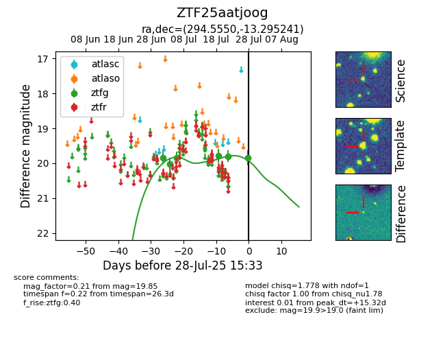

Target ZTF25aatjoog at 2025-07-28 15:33, see:
FINK: fink-portal.org/ZTF25aatjoog
Lasair: lasair-ztf.lsst.ac.uk/objects/ZTF25aatjoog
ALeRCE: alerce.online/object/ZTF25aatjoog
alt names
ZTF25aatjoog (ztf,fink)
coordinates:
equatorial (ra, dec) = (294.5550,-13.29524)
galactic (l, b) = (26.0681,-16.28629)
photometry
last ztfg=19.85
6 ztfg detections
